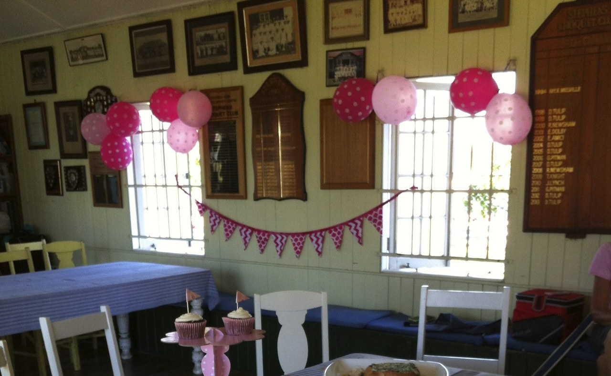

Stephens Croquet Club
Club Facilities
The club is available for croquet party bookings
Try a new experience for your next function: a team building day, business meeting, community group event, hens' party, Friday afternoon drinks, family celebration, birthday, engagement, reunion or Christmas party.
Fees
- Functions: $70 per hour (or part of) for court hire plus $10 per head through the gate (children free). Includes tuition and equipment.
- Group bookings: $15 per head for up to 2 hours (minimum $100). Includes tuition and equipment and complimentary tea and coffee.
- Bookings are essential. A non-refundable booking fee may apply.
- Arrangements can be made for a reschedule of dates if there are mitigating circumstances.
Clubhouse
- Seating for 40 people.
- Kitchen with microwave, refrigerator, crockery and cutlery.
- BYO food and refreshments, or you can engage caterers.
- Clean-up is your responsibility.
Croquet
- 4 courts, mallets and balls supplied.
- Tuition in small groups.
- People playing croquet must wear suitable protective flat-soled shoes.
- It is the responsibility of visitors to care for their children on the courts during play.
- Children under 10 years are not permitted on the courts.
Bookings
Use the Contact page of this website or phone Val on 0439 714 312. The clubhouse is available for hire for meetings. Availability and hire charges available on application.